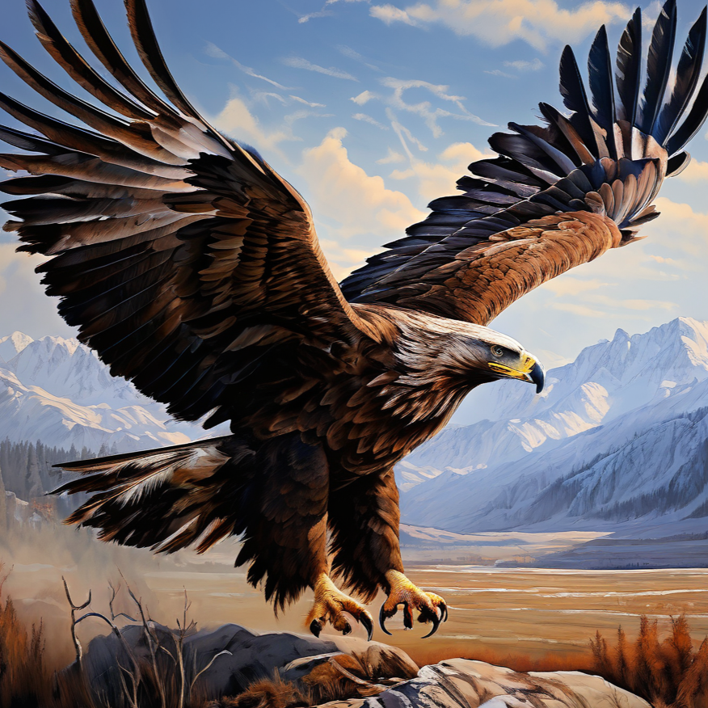
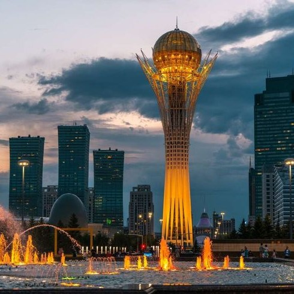

Discover the beauty and diversity of this vast country.
Know more about KazakhstanHorseback riding is a traditional activity deeply rooted in Kazakh culture. It's not only a sport but also a symbol of freedom and history, often performed during festivals and national celebrations.
Eagle hunting, or berkutchi, is a centuries-old tradition where trained golden eagles assist hunters. It's especially prominent in the mountainous regions of the country.
In winter, skiing becomes a popular pastime, especially near Almaty where the Shymbulak ski resort offers stunning views and excellent slopes.
In the cities, people enjoy cinemas, malls, cafes, and cultural venues. The modern urban lifestyle in cities like Nur-Sultan and Almaty includes concerts, theaters, and lively social scenes.